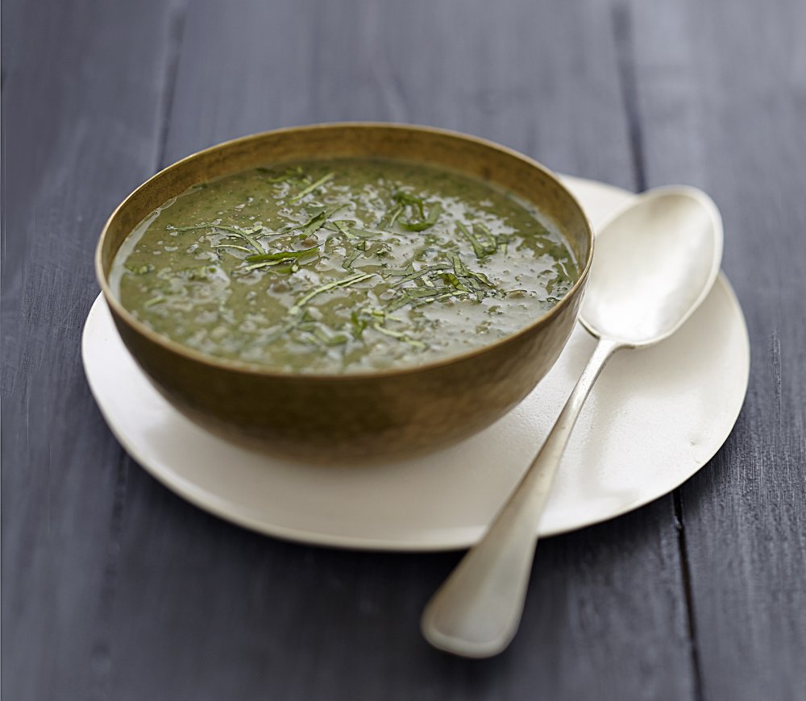

Lentils Soup

Ingredients:
- 3 tablespoons of olive oil
- 1 onion
- 1 carrots
- 1 leek white
- 1 shallot
- 150g green lentils
- 2 bouillon cubes
- 1L of water
Instructions:
- Peel the white leek, carrot, onion and shallot, and cut into mirepoix (small dice).
- In a casserole, put three tablespoons of olive oil and sweat the vegetables which will for 5 to 10 minutes over low heat.
- Add the lentils, mixing them well with the vegetables so that they become translucent and absorb the flavors of the vegetables.
- Add 1 liter of water, two stock cubes, and simmer for 3/4 of an hour.
- Mix the preparation (no food mill, the mixer leaves small pieces for a nicer consistency).
- Serve hot with croutons, a little grated cheese, or boiled eggs.